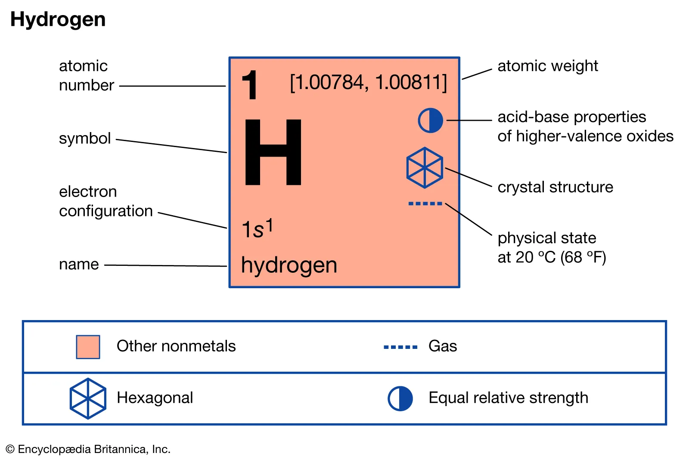

Hydrogen (H)is a colourless, odourless, tasteless, flammable gaseous substance that is the simplest member of the family of chemical elements. The hydrogen atom has a nucleus made of a proton having one unit of positive electrical charge; an electron, having one unit of negative electrical charge, is also related with this nucleus. Under normal conditions, hydrogen gas is a loose concentration of hydrogen molecules, each made of 2 atoms, or H2.
click me to learn more about Hydrogen